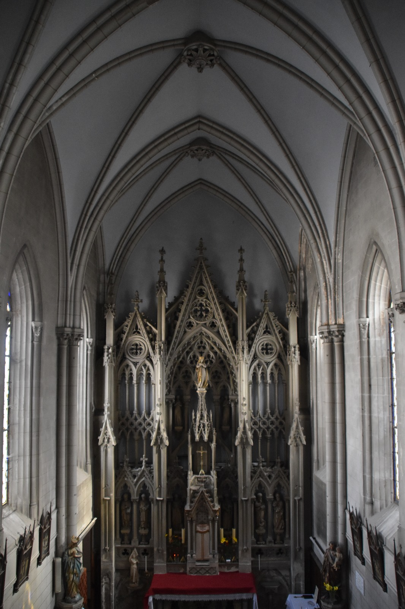
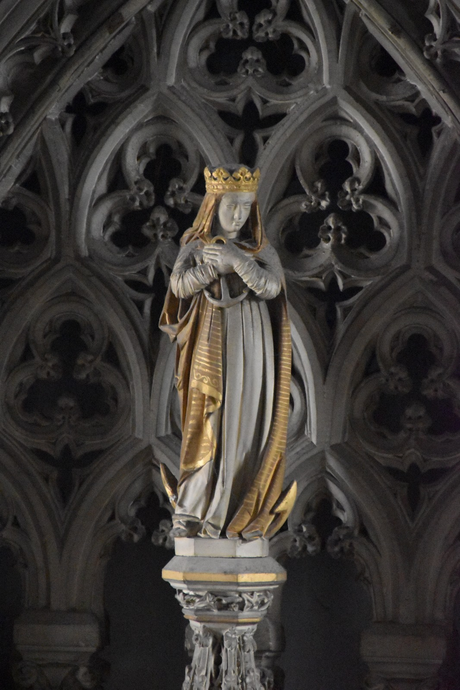

L'Eglise Notre Dame de l'Espérance (La Rochelle) de la fraternité sacerdotale Saint Pie X a besoin de votre aide ! Vous pouvez contribuer à sa rénovation et soutenir notre mission en cliquant sur le bouton ci-dessous.

